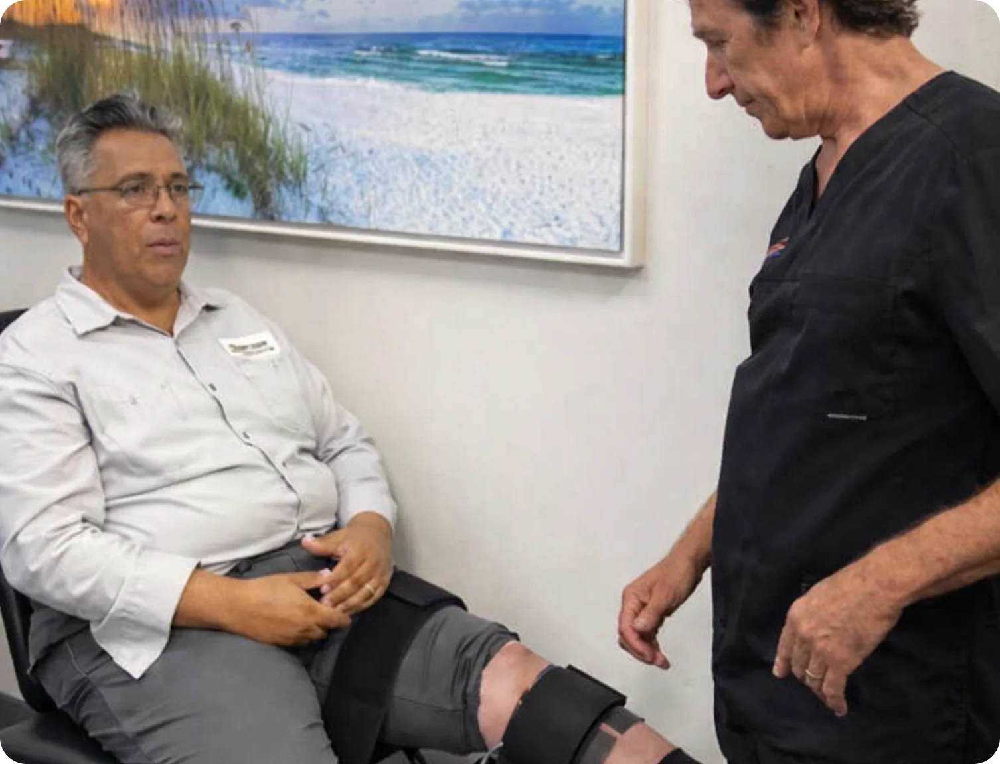
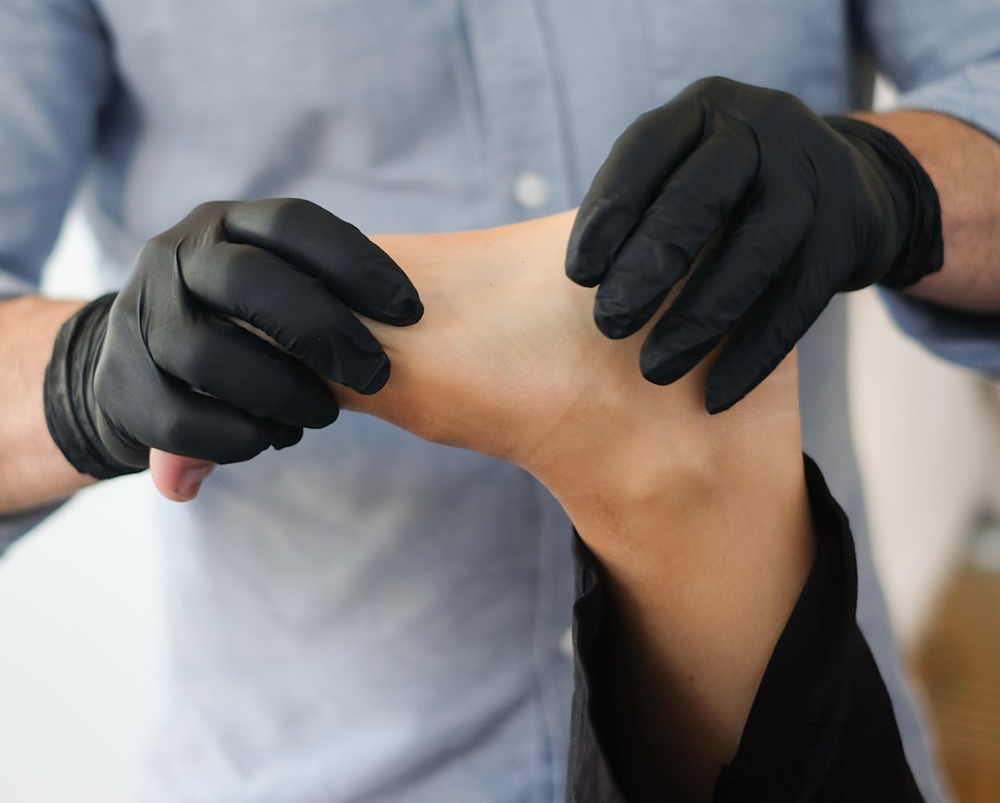
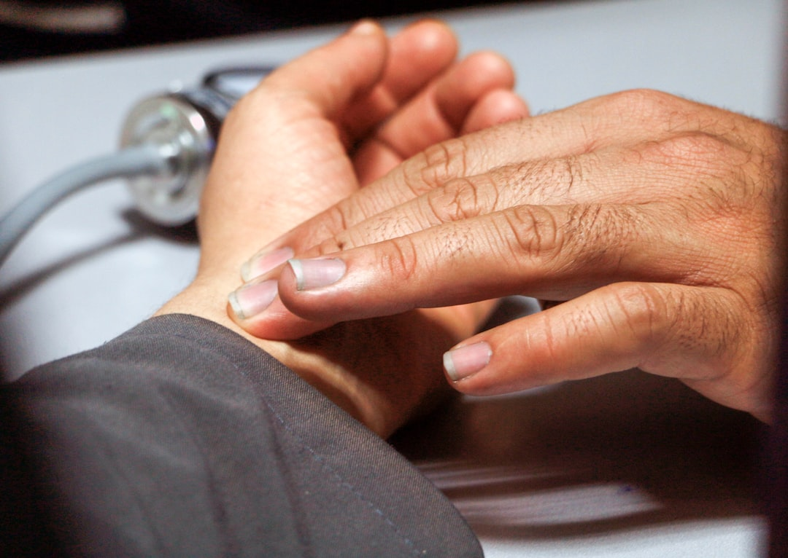

Knee surgery, especially knee replacement, is one of the most common orthopedic procedures in the country. It's effective for severe cases. But it comes with weeks of recovery, risks of complications, and significant cost. Knee decompression therapy treats many of the same conditions without incisions, anesthesia, or downtime. If you've been told you need knee surgery or you're trying to avoid it, here's an honest comparison of both options.

The Knee-On-Trac system gently separates the knee joint using computer-controlled traction. This creates space inside the joint, relieves pressure on cartilage and meniscus tissue, increases circulation, and promotes the body's natural healing response. Sessions last 20 to 30 minutes and are typically painless.
At Novaré Injury Care and Rehab, we combine knee decompression with laser therapy, chiropractic care, and rehabilitative exercises for a multi-angle approach to knee pain. Dr. Bracic evaluates your condition with diagnostic imaging before recommending a treatment path.

Common surgical options include knee replacement (total or partial), arthroscopic surgery, and osteotomy. All require anesthesia, recovery time, and carry risks of complications including infection, blood clots, nerve damage, and implant failure.
Removes damaged bone and cartilage, replaces with metal and plastic components. Total or partial options available. Recovery: 2 to 6 months.
Small incisions with a camera to repair torn meniscus, remove loose cartilage, or clean up the joint. Least invasive surgical option.
Reshapes the bone to shift weight off the damaged area. Often used to delay knee replacement in younger patients.
Decompression isn't effective for severe structural damage or bone-on-bone arthritis. It requires multiple sessions. Results vary based on severity and duration of the condition. But it can delay surgery significantly.
How knee decompression and knee surgery compare on the factors that matter most.
| Factor | Knee Decompression | Knee Surgery |
|---|---|---|
| Invasiveness | Non-invasive, no incisions | Surgical, requires anesthesia |
| Recovery | None, walk out same day | 2 weeks to 6 months |
| Risks | Minimal | Infection, blood clots, nerve damage, implant failure |
| Cost | Fraction of surgery cost | $30,000 to $80,000+ for replacement |
| Best for | Osteoarthritis, meniscus tears, chronic knee pain | Severe joint damage, bone-on-bone, structural failure |
| Repeat treatment | Safe to repeat | Revision surgery is higher risk |
| Pain during treatment | Typically painless | Post-surgical pain for weeks |
Decompression is a strong option when your knee problem doesn't require immediate surgical intervention.
Surgery is essential when conservative treatments have been thoroughly tried and the structural damage is too severe for non-surgical approaches.

Not sure where to start? Use our virtual consultation tool to share your concerns and get recommendations from home.
Same-day appointments at both locations.
Nuestro personal habla inglés y español.
15880 Summerlin Road, Suite 114
Mon, Wed, Fri: 8:00am–12:30pm & 2:00pm–6:00pm
Tue, Thu: By Appointment Only
25 Homestead Road N., Suite 5
Tue–Thu: 8:00am–12:30pm & 2:00pm–6:00pm
Fri: 8:00am–12:30pm
Spinal adjustments, Cox Flexion Distraction, Pro Adjuster SRT.
Non-surgical disc treatment using the DRX9000. MRI required.
Auto accident, workplace, and sports injury treatment.
AI-guided Class IV lasers for tissue repair.
Digital x-rays with MRI coordination.
Myofascial release, joint mobilization.